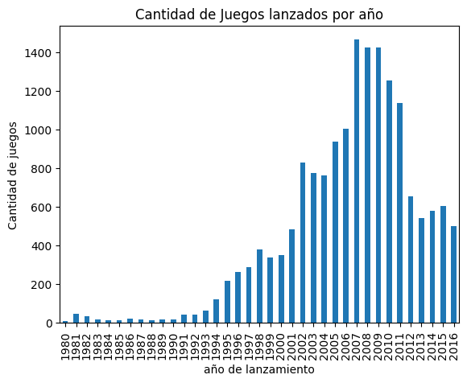
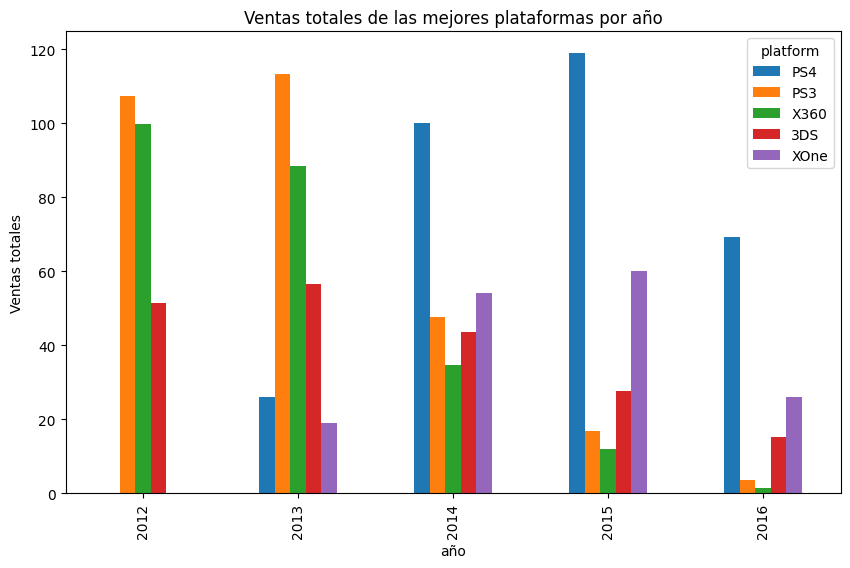
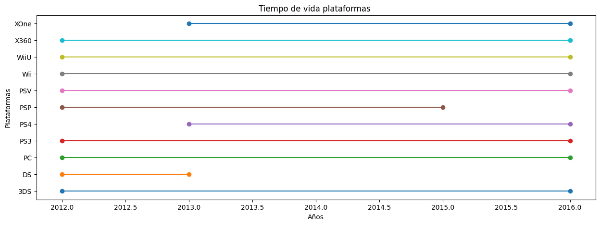
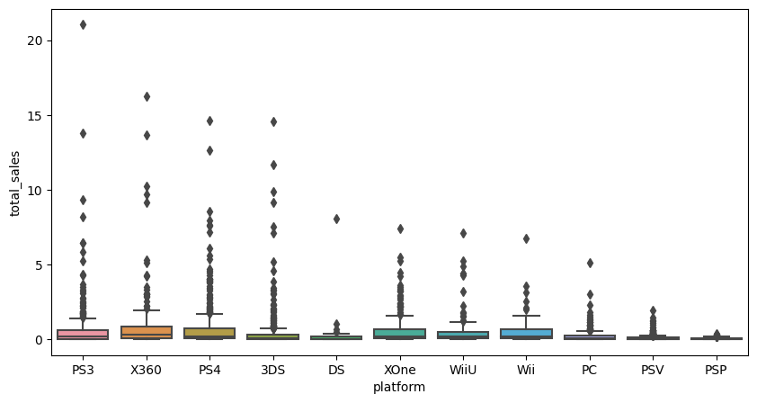
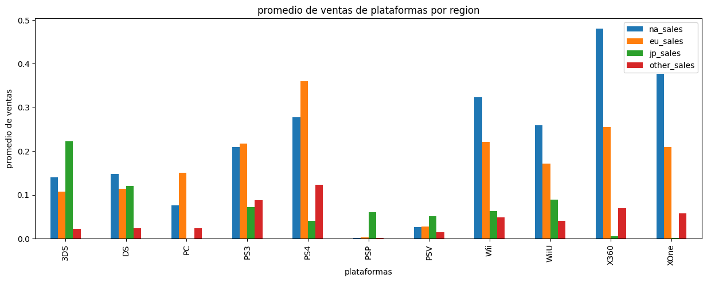
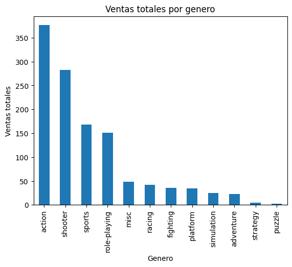
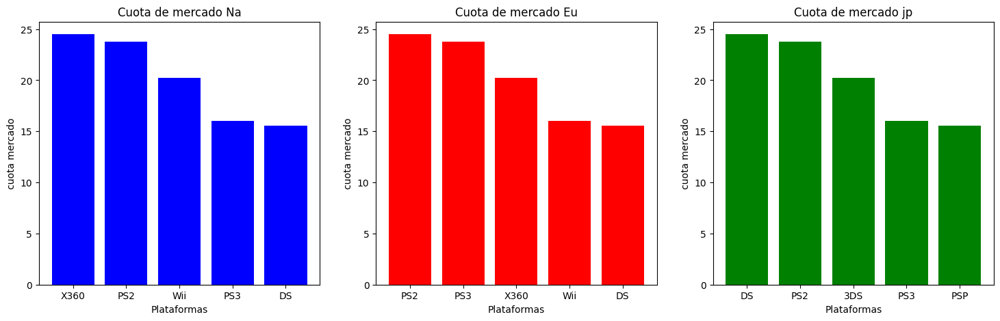
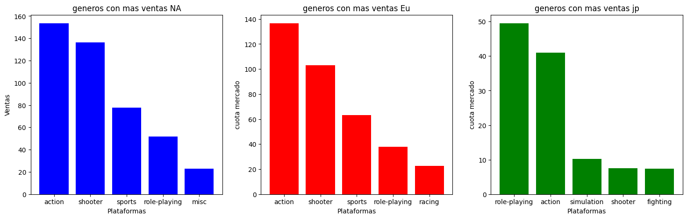
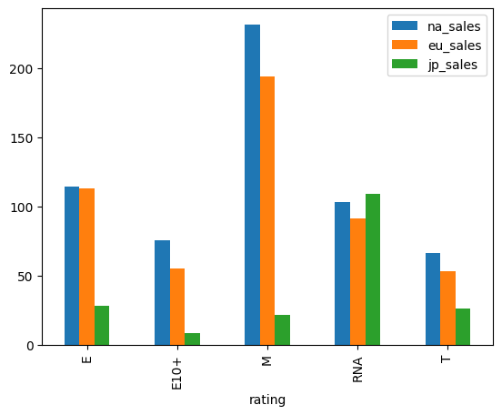

La tienda online ice la cual vende video juegos alrededor del mundo y tiene a su disposicion la informacion de la ventas que se han realizado desde 1980 hasta el 2016, no solo se cuenta con la venta de videosjuegos por region como tal (na,eu.jp y otros) si no que tambien cuentan con las plataformas en que salieron los juegos su genero, la clasificacion de la Junta de clasificación de software de entretenimiento (edad recomendada para jugar) y las reseñas de estos tanto de prensa especializada como de usuarios normales.
Se nos encargo encontrar tendencias o patrones a la hora de comprar juegos si existen preferencias por alguna platforma, si se tiene preferencia por un genero es especial si la reseñas afectan las compras y si estos difieren de region en region. Todo esto para enfocarse en los juegos que seran mas rentables para el año 2017.
<class 'pandas.core.frame.DataFrame'>
RangeIndex: 16715 entries, 0 to 16714
Data columns (total 11 columns):
# Column Non-Null Count Dtype
--- ------ -------------- -----
0 Name 16713 non-null object
1 Platform 16715 non-null object
2 Year_of_Release 16446 non-null float64
3 Genre 16713 non-null object
4 NA_sales 16715 non-null float64
5 EU_sales 16715 non-null float64
6 JP_sales 16715 non-null float64
7 Other_sales 16715 non-null float64
8 Critic_Score 8137 non-null float64
9 User_Score 10014 non-null object
10 Rating 9949 non-null object
dtypes: float64(6), object(5)
memory usage: 1.4+ MB
name platform year_of_release genre na_sales \
0 Wii Sports Wii 2006.0 Sports 41.36
1 Super Mario Bros. NES 1985.0 Platform 29.08
2 Mario Kart Wii Wii 2008.0 Racing 15.68
3 Wii Sports Resort Wii 2009.0 Sports 15.61
4 Pokemon Red/Pokemon Blue GB 1996.0 Role-Playing 11.27
eu_sales jp_sales other_sales critic_score user_score rating
0 28.96 3.77 8.45 76.0 8 E
1 3.58 6.81 0.77 NaN NaN NaN
2 12.76 3.79 3.29 82.0 8.3 E
3 10.93 3.28 2.95 80.0 8 E
4 8.89 10.22 1.00 NaN NaN NaN
-El dataframe cuenta con 16715 entradas y con 11 columnas
-Se puede apreciar tipos de datos mal asignados como year_of_release como float y user_score como object
-No todas la columnas cuentan con todos lo datos
-Cambiar posteriormente las siglas tbd en user_score para solo dejar solo un tipo de dato en la columna
-Los datos ausentes pueden deberse al año en que se lanzaron los juegos ya que hay juegos de 1980 por lo que pueden no haber resivido alguna reseña o evaluacion por las entendades pertinentes o porque el juego o mas bien su desarrolladora no preciso toda a informacion de este.
name 2
platform 0
year_of_release 269
genre 2
na_sales 0
eu_sales 0
jp_sales 0
other_sales 0
critic_score 8578
user_score 6701
rating 6766
dtype: int64
-la mayor cantidad de valores nulos los poseen las columnas critic_score, user_score y rating
-Las columnas name y genre poseen el minimo
-La columna year_of_release cuenta con datos nulos pero no tan significativos como los mencionados primero
-Existian 2 nombre de juegos nulos pero estos no se pueden eleminar ya que cuentan con ventas por lo cual los cambie por ngi (no game information)
-Deje los nombres en minusculas para luego realizar una busqueda de duplicados mejor
-Se puede apreciar que los 2 juegos que no tenian un genero eran los mismos que no contaban con un nombre
-No se elimanaron debido a que estos juegos presentan ventas
-se cambio estos a generos a unnasigned-genre
-Se convertio todos los nombres de de los generos a minusculas para tener mas limpios los datos
-Los datos nulos de la columna year of release se cambiaron por la mediana de los datos
-El cambio anterior se realizo para comvertir el tipo de dato a int ya que estaba en float y esto no tiene sentido ya que los años son solo numeros enteros
-Por lo que se puede observar el critic score es un valor del 1 al 100
-Los datos nulos se reemplazoron por la mediana de los datos
-Se convertio el tipo de dato de float a int ya que se puede ver la puntuacion solo se realiza en numeros enteros
-Se puede apreciar que el user score va de 1.0 hasta el 10.0
-Los datos con tbd se les asigno el 0.0 ya que todovia no se reciben un score
-Al cambiar la designacion tbd se convertio el tipo de dato de object a float
-Se decidio rellenar los datos nulos con la mediana de los datos
-Los datos nulos se rellenaron con la sigla RNA (rating no asignado )
-Como se puede apreciar no se encuentran filas totalmente duplicadas
-En este caso en concreto no tiene mucho peso si se encuentran duplicados en los nombres de los juegos ya que en el dataset como se puede ver cuenta con la salida de un mismo juego para diferentes plataformas que algunos casos puede ser en un mismo año o en otro ya que la salida de un juego en una plataforma esta totalmente en desicion de los dueños de esta y se realiza en forma de acuerdo con la empresa que publica el juego

-Los inicios del registro que es de 1980 se puede ver que existian pocos lanzamientos por año
-Apartir de los 2000 comenzaron a salir mas juegos por año posiblemente debido al surgimiento de nuevas plataformas
se tomara en encuenta los datos a partir del año 2012 para los siguientes analisis para poder realizar una proyeccion mas acertada

-Las plataformas como mejores ventas fueron la PS4,PS3,X360,3DS,XOne
-Se puede apreciar que las plataformas de playstation son las que poseen mayores ventas para los años vistos
-Las plataformas preferentes son las de Sony ya que posee tanto la PS3 y la PS4 en la lista, le sigue Microsoft con la Xbox 360 y la Xbox One y por ultimo nintendo con la 3DS

-En general la vida util dependera de que tan popular sea la plataforma por lo que se puede apreciar cuando es popular tiene una vida util de al menos 4 años
-Las plataformas que no tuvieron ventas el año 2016 fueron la PSP Y la DS
-Las plataformas posiblemente mas rentables por el periodo en que salieron y las compañias que generalmente las respaldan(Sony,nintendo,Microsoft) son WiiU, PS4 Y Xbox One
-Con respecto a lo anterior se debe considerar en este ambito en particular la plataforma PC ya que hace referencia al equipo computacional como tal por lo cual en el contexto de los videojuegos siempres sera relevante y rentable considerar esta opcion


-Como se puede ver en el grafico de caja la mayoria de plataformas tiene ventas similares , pero de igual forma muestran una gran cantidad de valores atipicos lo que es bueno ya que se concluye que se tienen ventas por sobre los cuartiles dados
-Como se puede apreciar en el grafico de promedio de ventas de plataformas por region en norte america y Europa se encuentran con una gran cantidad de ventas a diferencia de Japon
La correlacion entre la critica de los de los medios especializados y las ventas es 0.2662607325220693
La correlacion entre la critica de los usuarios y las ventas es 0.046211257404721644
-Como se puede ver en el gráfico de dispersión las reseñas positivas si afectan las ventas pero se toma mas peso por las reseñas de los propios jugadores que por la critica especializada
-Lo planteado anteriormiento se puede evidenciar por la correlación que tiene las reseñas de los usuario con los ventas totales ya que hay una correlacion entre el user score y las ventas totales superior a la de critic score

-Se filtro y se realizo el analisis solo con juegos que estuvieran en las 5 plataformas mas populares
-Por lo general se suele preferir jugar en las plataformas PS3 y Xbox 360 por lo que se puede apreciar en el grafico hay que considerar el genero del juego ya que en este caso la 3DS es una consola portatil y puede preferir ciertos juegos para esta por ejemplo

-Se suele preferir juegos que requieren que el jugador realice muchas acciones con el control esto se ve reflejado ya que el genero mas vendido es el de accion y el menos preferido el de estrategia los cuales son mas complejos y contienen acciones automaticas por lo que el judador no interactua tanto con los controles

-Por lo que se puede apreciar las regiones tiene sus preferencia en cuanto a las consolas
-En norte america tiene preferencia por Xbox 360 y PS2 mayormente, en europa por PS2 y PS3 y en japon por la DS y PS2

-El genero de accion es el preferido siendo el como mas ventas en las regiones de Norte America y Europa y el segundo en Japon
-las regiones de Norte America y Europa tiene preferencia por los mismo generos
-Japon tiene diferentes preferencias con respecto a los generos

-Las ventas segun el rating(edad recomendada) que tienen los juegos por region en general lo gana Norte America seguido de Europa y finalmente Japon
-Segun el grafico mostrado los juegos con rating M para todos son los juegos mas vendidos
-Tener en considerancion el rating agregado anteriormente RNA debido a que hay una cantidad de juegos a considerar que no han sido evaluados para estar en algunas de las categorias
Las calificaciones promedio de los usuarios para las plataformas Xbox One y PC son las mismas.
Hipotesis nula: Las calificaciones promedio de los usuarios para las plataformas Xbox One y PC son iguales
Hipotesis alternativa: Las calificaciones promedio de los usuarios para las plataformas Xbox One y PC son diferentes
valor p: 0.7101755651474378
no podemos rechazar la hipotesis nula
0.9816880230315098
0.3222664852658257
no podemos rechazar la hipotesis nula
-Utilizando la prueba correspondiente para comprobar si las medias estasdisticas son iguales se pudo comprobar que las reseñas de los usuarios de Xbox One y PC casi iguales
-Esto se sustento al hacer la prueba de levene que muestra si las varianzas son iguales y los resultados tambien condujeron al rechazo el no poder rechazar H0
-Por lo visto los usuarios de estas plataformas tienen una opinion similar con respecto a los juegos, puede ser debido a que cuentan con los mismos juegos
Las calificaciones promedio de los usuarios para los géneros de Acción y Deportes son diferentes
Hipotesis nula: Las califiaciones promedio de los usuarios para los generos de accion y deportes son iguales.
Hipotesis alternativa: Las calificaciones promedio de los usuarios para los generos de accion y deportes son diferentes
El valor de p: 3.8664540799904844e-20
Rechazamos la hipotesis nula
51.228201557894856
1.372242001537514e-12
Rechazamos la hipotesis nula
-Utilizando la prueba correspondiente para comprobar si las medias estasdisticas son iguales se pudo comprobar que las reseñas de los usuarios para los generos de accion y deportes es diferente.
-Esto se sustento al hacer la prueba de levene que muestra si las varianzas son iguales y los resultados tambien condujeron al rechazo de H0
-Al parecer los usuarios no tienen el mismo gusto por los juegos de accion y deportes, puede tener relacion al rating por edad ya que los juegos de deportes pueden ser catalagados para los mas pequeños ya que no incluyen mucha violencia lo que puede no interesar a los mas grandes
-El favoritismo se vio sobre las consolas como Playstation, Xbox y Nintendo
-Con respecto al punto anterior en el ambito de los videojuegos la plataforma PC como esta descrita en el dataframe siempre se debe tener en consideracion
-Las personas tiene un genere que prefieren el cual es el de accion de manera general y luego por region por lo menos fue el preferido por Norte America y Europa y segundo mejor en el caso de Japon
-Como se mencionan en el punto anterior tanto las preferiencias con respecto a la plataforma como el genero las regiones de Norte America y Europa tiene tendencias muy parecidas.
-Con respecto al genero de accion esto se puede evidenciar en la comparacion de los mismos juegos en otras plataformas en la cual la moyoria son del genero accion
-Japon por otra parte cuenta con otras preferencias un tanto diferentes en cuanto a plataforma y genero preferidos.
-Se puede evidenciar que las reseñas de los juegos influencia su compra en mas medida las de los propios usuarios
-Los jugadores tienden a preferir juegos con rating(categoria de edad recomendada para un juego) de M lo que quiere decir que estan interesados en juegos que pueden contener violencia, escenas de sangre, etc/
-Por los datos anteriores se puede concluir que los juegos mas rentables seran los de genero accion ya que es una gran preferencia en las 3 regiones estudiadas, en cuanto a las plataformas se vio una tendencia hacia las marcas Playstation, Xbox y nintendo, por lo que la PS4,Xbox One y Nintendo WiiU son las plataformas a considerar para futaras ventas